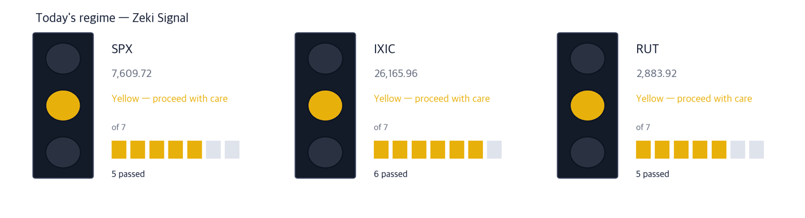
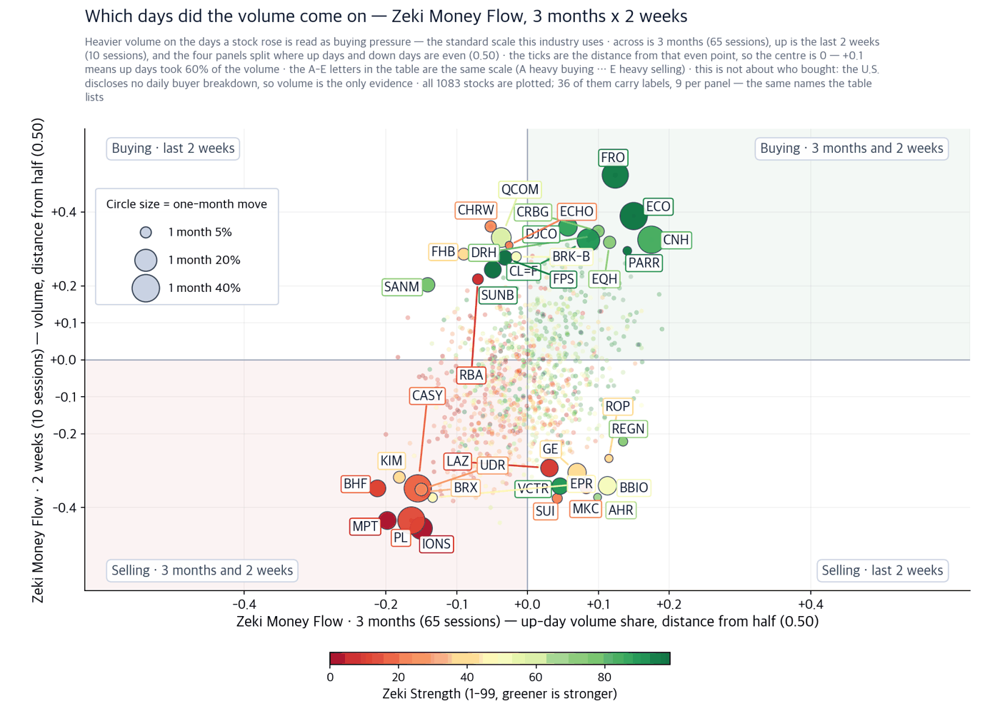
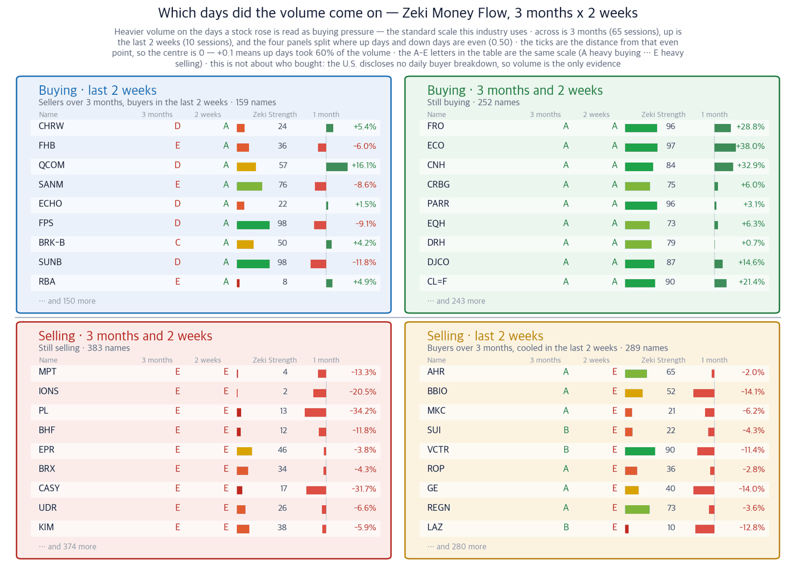

The Fed raised rates — for two reasons rates cannot fix
September 17, 2026 · figures as of the September 16 close
Companies we do not own, found in the newspapers — with the figures behind why they might earn their place.
S&P 500 7,551.81 (−0.45%) | Dow 51,462.55 (−1.21%) | 10-yr Treasury 5.02% | Fed funds 3.75%-4.00% | Zeki Signal Amber |

How to read this
| Lit lamp | Today's regime. Green means buyers have the edge, yellow means wait, red means no new buys. |
| Filled squares | How many of the 7 conditions passed. More filled means firmer market structure. |
| All filled but not green | Something else pulled the grade down one step. The reason is printed under the lamp. |
The Zeki Signal reduces seven measures of market condition to one light. Green favours buying, amber says wait, red says hold off. All three indexes are amber today.
What to do now
Executive summary — three conclusions first
The Fed raised its policy rate a quarter point on September 16. It is the first increase in three years and the vote was unanimous. Sixteen of eighteen officials expect one more increase this year.
Two forces were named as the cause: energy prices driven up by the Iran war, and demand created by AI investment. A higher policy rate does not produce more crude oil. Nor does it halt data-centre construction that is already contracted.
So we looked for companies sitting on those two causes rather than under the rate. We measured four. One met all four of our tests — Valero Energy.
So what do we do: Watch which way the 10-year Treasury yield moves in the first 30 minutes. It settled at 5.02% and stands at 4.99% before the open.
First, the week's economy
If you remember one number this week, make it 5%. The 10-year Treasury yield closed above that line for the first time since July 2007. The 30-year mortgage rate approaching 7% comes from the same place. It stood at 6% in February.
| When | What to watch | What it would mean |
|---|
| First 30 minutes, Sept 17 | Direction of the 10-year yield | Below 4.99% and yesterday's fall was a retracement |
| October 28 | Fed meeting — whether one more increase comes | If it firms, long-term yields rise again |
| December 9 | Fed meeting — the last decision of the year | Futures put a further increase this year near 90% |
Why
Checked one by one against price and flow
Theme 1 · The shortage is in diesel, not crude
Crude fell 3.2% yesterday to $102.43 a barrel. Diesel, meanwhile, sits near a record. Ukrainian strikes on Russian refining have cut the capacity that turns one into the other. William Dudley, the former New York Fed president, said diesel is behaving as though oil were at $200 (The Wall Street Journal). That splits the driller from the refiner. Yesterday showed it plainly: Diamondback Energy fell 7.62% while Valero Energy rose 1.79%.
| Valero Energy (VLO) | Well grounded |
Close $404.14 · Sept 16 +1.79% · 1 month +16.4% · 3 months +65.5% · Zeki Strength 96 · Zeki Flow A
Who a U.S. refiner · What a wider refining margin · When through the September 16 close · Where Gulf Coast refineries · Why crude is ample but the plant that makes diesel is not · How the gap between crude and product prices stays as refining profit
Confirming signal — The September 16 close of $404.14 is the highest in the past year. Hold that level and the margin story stands.
What would invalidate it — A close below the September 1 price of $361.99 erases the two-week gain. Word that Russian refining is repaired would remove the premise.
Theme 2 · What data centres cannot get is electricity
Only three S&P 500 sectors rose yesterday, and utilities was one of them. Power companies rising on the day of a rate increase is not ordinary. Overnight a contract showed why. Generac agreed to supply backup generators for Amazon data centres. Deliveries in 2027 and 2028 are worth $2.4 billion, and the whole arrangement could reach $8 billion. Amazon also received the right to buy 1.69 million Generac shares at $200.93 each.
| Generac Holdings (GNRC) | No basis |
Close $178.15 · Sept 16 +1.78% · 1 month −19.5% · 3 months −32.9% · Zeki Strength 15 · Zeki Flow E
Who a generator maker · What Amazon data-centre volume · When after the September 16 close · Where U.S. data-centre sites · Why a facility that cannot tolerate an outage needs its own reserve power · How revenue begins when deliveries start in 2027
Our four tests are measured to the September 16 close. That is before the contract was known, and the stock met none of the four. The gap between the news and the figures is why it appears here.
Confirming signal — It rose 34% before the open. Watch whether that gain survives the session and recovers the 50-day average of $204.62.
What would invalidate it — Failure to regain the September 1 close of $181.42 means the news lasted one day. Zeki Flow staying at E says the same.
Theme 3 · Toward not trusting one place
Amazon Web Services said it cannot restore some customer data held at Gulf facilities struck by Iranian drones in the spring. The data was stored only in Bahrain and the U.A.E. (The Wall Street Journal). The lesson a company draws is single: do not keep it with one provider, in one region. The demand goes to firms selling the hardware and software that spread data across several.
Close $192.96 · Sept 16 +1.59% · 1 month −5.5% · 3 months +19.7% · Zeki Strength 92 · Zeki Flow B
Who an enterprise storage company · What demand to hold data in more than one place · When through the September 16 close · Where corporate systems spanning several clouds · Why the data must survive the loss of a region · How it turns into sales of capacity and management software
Confirming signal — The September 16 close sits above the 50-day average of $183.21. Hold above it and the two-week advance stands.
What would invalidate it — A close below the September 1 price of $183.16 erases that advance. Zeki Strength falling under 90 also removes it.
One theme we excluded today
Intel moved the most yesterday. Reports said SK Hynix is discussing leasing or sharing Intel's planned Ohio plant (The Wall Street Journal). Intel rose 4.76% yesterday and a further 4.85% before the open. Yet it met only two of our four tests. Zeki Strength is high at 97, but the stock is down 1.7% over a month. Zeki Flow reads C. A 14.4% gain over two weeks is the whole of it. The report is not settled, and it carries the caveat that the South Korean government may object. So we did not make it a name today.
Excluded Intel is not a name today.
Today's findings on one page
| Theme | Name | Zeki Strength | Weight of evidence |
|---|
| Diesel shortage | Valero Energy (VLO) | 96 | Well grounded |
| Data-centre power | Generac Holdings (GNRC) | 15 | No basis |
| Spreading data | NetApp (NTAP) | 92 | Grounded |
| Chips made in America (excluded) | Intel (INTC) | 97 | Needs checking |
Weight of evidence — we counted four things
(1) up over the month (2) Zeki Strength above 90 (3) Zeki Flow A or B over three months (4) no weakening over the last two weeks. The number met decides the label.
| Name | ①up over
the month | ②Strength
90+ | ③flow 3mo
A or B | ④2wk not
weaker | Met | Weight of evidence |
|---|
| Valero Energy (VLO) | O | O | O | O | 4/4 | Well grounded |
| Generac Holdings (GNRC) | X | X | X | X | 0/4 | No basis |
| NetApp (NTAP) | X | O | O | O | 3/4 | Grounded |
| Intel (INTC) | X | O | X | O | 2/4 | Needs checking |
Where the money went — Zeki Flow

How to read this
| One dot | One stock. Its position is simply its two values, and the horizontal and vertical rules through the middle are the centre line for each. The four corner labels say what each quadrant means. |
| Dot size | The last month's move, up or down. Bigger means it moved more. |
| Dot colour | Zeki Strength — greener is stronger. |
| Only 30 | Korean and ticker labels overlap beyond that. The names left out sit near the centre, where little moved. |

How to read this
| Four panels | The two measures are each compared with a centre line. Top right cleared both, bottom left cleared neither, and the other two cleared one. Each panel's title is a plain sentence saying what that means. |
| The two middle columns | Where the two periods are compared. If they carry letters A-E, that is the standard scale this industry uses: A heavy buying, B buying, C an even split, D selling, E heavy selling (a rank of all names in fifths, so A is the top 20%). If they carry numbers, that is net buying over the period. |
| Nine per panel | The largest movers in that panel. The rest are counted at the foot of the panel. These same nine per panel are the names labelled on the scatter. |
| Month bar | Zero at the centre: right is up, left is down. Compare lengths within one panel only — each panel is scaled to itself. |
| Zeki Strength | A 1-99 rank. Longer and greener means the stock's price is stronger than the market. |
Scanned 1,083 stocks that trade at least $20M a day.
What this is, and what it is not. The United States has no daily disclosure of who bought — no institutional or foreign net share counts. What we can measure is buying pressure against selling pressure over the last thirteen weeks — how much of the trading arrived while the stock was rising. A reading above 0.50 means more shares changed hands while the stock rose. That is the standard way to infer institutional accumulation, but it is an inference, not a count.
Heaviest accumulation
| Stock | Up/down volume | 1 month | As of |
|---|
| URGN | 0.69 | -12.5% | 09-16 |
| VEEV | 0.69 | +12.0% | 09-16 |
| CNH | 0.68 | +32.9% | 09-16 |
| KNSA | 0.66 | -3.3% | 09-16 |
| EBC | 0.66 | -7.7% | 09-16 |
Heaviest distribution
| Stock | Up/down volume | 1 month | As of |
|---|
| BHF | 0.29 | -11.8% | 09-16 |
| BIRK | 0.30 | -18.8% | 09-16 |
| MPT | 0.30 | -13.3% | 09-16 |
| ROL | 0.32 | -4.5% | 09-16 |
| KIM | 0.32 | -5.9% | 09-16 |
Selling confirmed by price — BIRK reads 0.30 and is down 18.8% over the month. When the volume reading and the price agree, the reading is doing what it is supposed to do.
Buying against a falling price — URGN reads 0.69, the buying side, yet the stock is down 12.5% over the month. Someone is taking the other side of the decline. That is either early or wrong, and there is no way to tell which from this number alone.
Did money follow the names we found
Even when the story and the price agree, we look at flow separately. Below splits three months from the last two weeks. Good over three months and poor over two means the buying has stopped.
| Name | Zeki Flow 3mo | Zeki Flow 2wk | 1 month | 2 weeks |
|---|
| Valero Energy (VLO) | A | A | +16.4% | +11.6% |
| Generac Holdings (GNRC) | E | C | −19.5% | −1.8% |
| NetApp (NTAP) | B | A | −5.5% | +5.3% |
| Intel (INTC) | C | A | −1.7% | +14.4% |
Zeki Flow grades, from A to E, whether trading concentrated on up days. It shows where a stock stands now; it does not predict the next month. We tested it four times across two markets and twenty years, and it had no predictive power in any of them.
How the names we ran have done
4 of the 40 names run since 09/09 have 5 trading days behind them. Base: close on the day run; benchmark: S&P 500 over the same days.
What it is. A record of the companies we found in the newspapers and named in this digest, marked at that day's close, then counted as the price moves. Grouped by how firm the evidence was.
What it is for. To keep a number on whether names picked from the news actually perform. Each name is recorded on the day it ran, so the winners cannot be chosen afterwards.
What it is not. Not a recommendation, not something we bought, and not yet a verdict. That comes once, from a pre-registered test, when both markets together reach 60 cases.
| Weight of evidence | Names | Up | Down | Beat
S&P 500 | Avg excess |
|---|
| Well grounded | 2 | 2 | 0 | 2/2 | +8.4% |
| Grounded | 1 | 1 | 0 | 1/1 | +2.5% |
| Excluded | 1 | 0 | 1 | 0/1 | -3.4% |
| All | 4 | 3 | 1 | 3/4 | +4.0% |
76 cases collected so far. Until the test fires we only count ups and downs. 36 names without 5 trading days yet are excluded. Paper tally; no trading costs deducted.
- First 30 minutes — which way the 10-year yield moves from 4.99%.
- Morning — how much of its pre-open gain Generac keeps.
- Last 30 minutes — whether the S&P 500 and Nasdaq close back above their 50-day averages.
The day after a rate increase often retraces. Futures point to a higher open. It is better not to settle the question on one session's move.
Zeki Strength ranks a stock from 1 to 99 against every U.S.-listed name we follow. Zeki Flow grades from A to E whether trading concentrated on up days. Weight of evidence counts how many of four tests a name met. Four makes it well grounded, three grounded. One or two needs checking, none means no basis. What we ourselves bought or sold does not appear here.
Sources — the September 17 print edition of The Wall Street Journal, the morning U.S. market report, and our own price and flow data (September 16 close). We took only the facts and wrote them in our own words.
This digest carries names filtered by figures we calculate ourselves. It is not individual investment advice and does not recommend buying or selling any security. Every grade and rank shown is our own calculation, on a simulated portfolio basis. Investing carries risk of loss of capital.
This report is for information only and is not individual investment advice. ZekiRex™ Apex US runs a rules-based simulated portfolio of $10,000,000 — there is no real account, no order and no fill. The performance shown excludes commissions, taxes and slippage, and the price data omits companies that were delisted, which biases the result upward (survivorship bias). Past performance does not guarantee future results, and investing carries risk of loss of capital.
Based on a simulated portfolio. Not investment advice.
This is the Rex Way, ZekiRex™